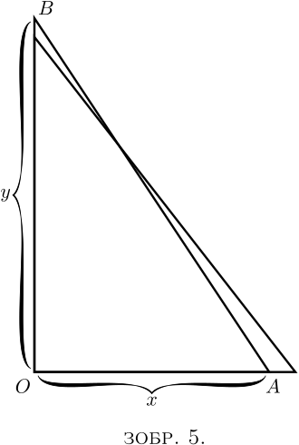

Протягом усієї книги ми матимемо справу з величинами, що зростають, і темпами їх зростання. Ми поділяємо всі величини на два класи: сталі та змінні. Ті, які ми вважаємо фіксованими, і називаємо сталими, ми зазвичай позначаємо алгебраїчно літерами з початку алфавіту, наприклад \(a\), \(b\) або \(c\); тоді як ті, які ми вважаємо здатними до зростання або (як кажуть математики) «варіювання», ми позначаємо літерами з кінця алфавіту, наприклад \(x\), \(y\), \(z\), \(u\), \(v\), \(w\) або іноді \(t\).
Крім того, ми зазвичай маємо справу з більш ніж однією змінною одночасно і думаємо про те, як одна змінна залежить від іншої: наприклад, як висота, досягнута снарядом, залежить від часу досягнення цієї висоти. Або нас просять розглянути прямокутник з фіксованою площею та запитати, як будь-яке збільшення його довжини призведе до відповідного зменшення його ширини. Або ми думаємо про те, як будь-яка зміна нахилу драбини призведе до зміни висоти, якої вона досягає.
Припустимо, що ми маємо дві такі змінні, що залежать одна від одної. Зміна в одній з них спричинить зміни в іншій, через цю залежність. Назвемо одну зі змінних \(x\), а іншу, що залежить від неї, \(y\).
Припустімо, що ми змінюємо \(x\), тобто ми або змінюємо її, або уявляємо, що вона змінюється, додаючи до неї частинку, яку ми називаємо \(dx\). Тим самим, ми перетворюємо \(x\) на \(x + dx\). Тоді, оскільки \(x\) було змінено, \(y\) також зміниться і стане \(y + dy\). Тут частинка \(dy\) може бути в одних випадках позитивною, в інших — негативною; і вона не буде (хіба що за збігом) мати такий самий розмір, як \(dx\).
Візьмемо два приклади.
(1) Нехай \(x\) і \(y\) є відповідно шириною і висотою прямокутного трикутника (Зображення 4), кут нахилу гіпотенузи якого фіксований на \(30°\). Якщо ми припустимо, що цей трикутник збільшується, але його кути залишаються незмінними, тоді, коли основа росте так, щоб стати \(x + dx\), висота стає \(y + dy\). Тобто, збільшення \(x\) призводить до збільшення \(y\). Маленький трикутник, висота якого \(dy\), а основа \(dx\), є подібним до початкового трикутника; і вочевидь, що значення відношення \(\dfrac{dy}{dx}\) таке ж саме, як і відношення \(\dfrac{y}{x}\). Оскільки кут становить \(30°\) (прим. ред.: тангенс кута - це відношення довжини протилежного катета до довжини прилеглого катета), ми бачимо, що \[\frac{dy}{dx} = \tan{30°} = \frac{1}{1.73}.\]
(2) Нехай \(x\) на Зображенні 5 представляє горизонтальну відстань від стіни до нижнього кінця драбини \(AB\) фіксованої довжини; і нехай \(y\) буде висотою, яку драбина досягає на стіні. Тут \(y\) явно залежить від \(x\). Легко побачити, що якщо відтягнути нижній кінець \(A\) трохи далі від стіни, то верхній кінець \(B\) опуститься трохи нижче. Скажемо це науковою мовою. Якщо ми збільшимо \(x\) до \(x + dx\), то \(y\) стане \(y - dy\); тобто коли \(x\) отримує позитивний приріст, приріст, що отримує \(y\), є негативним.

Так, але на скільки? Припустімо, що драбина була такою високою, що коли нижній кінець \(A\) знаходився у \(19\) дюймах від стіни, верхній кінець \(B\) досягав \(15\) футів від землі. Тепер, якщо ми посунемо нижній кінець драбини ще на \(1\) дюйм, на скільки опуститься верхній кінець? Переведемо все в дюйми: \(x = 19\) дюймів, \(y = 180\) дюймів. Далі, приріст \(x\), який ми називаємо \(dx\), становить \(1\) дюйм: або \(x + dx = 20\) дюймів.
На скільки зменшиться \(y\)? Нова висота буде \(y - dy\). Якщо ми розрахуємо висоту відповідно до теореми Піфагора, то зможемо знайти, яким буде \(dy\). Довжина драбини: \[ \sqrt{ (180)^2 + (19)^2 } = 181 \text{ дюйм}. \] Зрозуміло, що нова висота, яка дорівнює \(y - dy\), буде такою, що
Далі, \(y\) дорівнює \(180\), тож \(dy\) дорівнює \(180 - 179.89 = 0.11\) дюйми.
Отже, ми бачимо, що збільшення \(dx\) на \(1\) дюйм призвело до зменшення \(dy\) на \(0.11\) дюйми.
А відношення \(dy\) до \(dx\) можна виразити як: \[ \frac{dy}{dx} = - \frac{0.11}{1}. \]
Також легко побачити, що (крім однієї конкретної позиції) розмір \(dy\) буде відрізнятися від розміру \(dx\).
І так, упродовж всього диференціального числення ми шукаємо, шукаємо і шукаємо одну цікаву річ - просте співвідношення, а саме, пропорцію, яку \(dy\) має до \(dx\), коли обидва вони нескінченно малі.
Тут слід зазначити, що ми можемо знайти це співвідношення \(\dfrac{dy}{dx}\) лише тоді, коли \(y\) і \(x\) певним чином пов’язані між собою, тож коли \(x\) змінюється, \(y\) змінюється також. Наприклад, у першому, щойно розглянутому прикладі, якщо ширину \(x\) трикутника зробити довшою, висота \(y\) трикутника також стане більшою, а в другому прикладі, якщо відстань \(x\) від основи драбини до стіни збільшити, висота \(y\), досягнута драбиною, зменшується відповідним чином, спочатку повільно, але все швидше і швидше, поки \(x\) стає більшим. У цих випадках відношення між \(x\) і \(y\) є абсолютно визначеним, його можна виразити математично, а саме \(\dfrac{y}{x} = \tan 30°\) та \(x^2 + y^2 = l ^2\) (де \(l\) — довжина драбини) відповідно, і \(\dfrac{dy}{dx}\) має значення, яке ми знайшли в кожному випадку.
Якщо \(x\), як і раніше, є відстанню підніжжя драбини до стіни, а \(y\) замість досягнутої висоти є горизонтальною довжиною стіни або кількістю цеглин у ній, або кількістю років, що минуло з моменту побудови, будь-яка зміна в \(x\) природно не призведе до жодних змін в \(y\); у цьому випадку \(\dfrac{dy}{dx}\) не має жодного значення, і неможливо знайти для нього вираз. Щоразу, коли ми використовуємо диференціали \(dx\), \(dy\), \(dz\) тощо, мається на увазі існування якогось відношення між \(x\), \(y\), \(z\), і це відношення називається «функцію» від \(x\), \(y\), \(z\) тощо. Наприклад, два вирази, наведені вище, а саме \(\dfrac{y}{x} = \tan 30°\) і \(x^2 + y^2 = l^2\), є функціями від \(x\) та \(y\). Такі вирази неявно містять (тобто містять, не показуючи це явно) способи вираження \(x\) через \(y\) або \(y\) через \(x\), і з цієї причини вони називаються неявними функціями від \(x\) та \(y\); їх можна відповідно помістити у форми \[\begin{align*} y &= x \tan 30° \quad\text{або}\quad x = \frac{y}{\tan 30°} \\ \text{та }\; y &= \sqrt{ l^2 - x^2} \quad\text{або}\quad x = \sqrt{ l^2 - y^2}. \end{align*}\]
Ці останні вирази явно виражають значення \(x\) через \(y\) або \(y\) через \(x\), і з цієї причини вони називаються явними функціями від \(x\) або \(y\). Наприклад, \(x^2 + 3 = 2y - 7\) є неявною функцією від \(x\) і \(y\); її можна записати як \(y = \dfrac{x^2 + 10}{2}\) (явна функція від \(x\)) або \(x = \sqrt{2y - 10}\) (явна функція від \(y\)). Ми бачимо, що явна функція від \(x\), \(y\), \(z\) тощо — це просто щось, значення чого змінюється, коли змінюються \(x\), \(y\), \(z\) тощо, або кожен окремо, або декілька разом. Через це значення явної функції називається залежною змінною, оскільки залежить від значення інших змінних величин у функції; ці інші змінні називаються незалежними змінними, тому що їх значення не виражене значенням, прийнятим функцією. Наприклад, якщо \(u = x^2 \sin \theta\), тоді \(x\) і \(\theta\) є незалежними змінними, а \(u\) є залежною.
Іноді точний зв'язок між кількома величинами \(x\), \(y\), \(z\) або невідомий, або його незручно формулювати; відомо лише, або зручно стверджувати, що існує певний зв’язок між цими змінними, тому неможливо змінити ані \(x\), ані \(y\), ані \(z\) окремо, не впливаючи на інші величини; існування функції від \(x\), \(y\), \(z\) тоді вказується за допомогою позначення \(F(x, y, z)\) (неявна функція) або \(x = F(y, z)\), \(y = F(x, z)\) або \(z = F(x, y)\) (явна функція). Іноді замість \(F\) використовується літера \(f\) або \(\phi\), так що \(y = F(x)\), \(y = f(x)\) та \(y = \phi(x)\) означають одне і те саме - що значення \(y\) залежить від значення \(x\) у якийсь спосіб, який не зазначено.
Ми називаємо співвідношення \(\dfrac{dy}{dx}\) «похідною функції \(y\) по змінній \(x\)». Це урочиста наукова назва цієї дуже простої речі. Але нас не лякають урочисті назви, коли самі речі дуже прості. Замість того, щоб лякатися, ми просто, розвантаживши розум, перейдемо до простої речі, а саме до співвідношення \(\dfrac{dy}{dx}\).
У звичайній алгебрі, яку ви вивчали в школі, ви завжди шукали якусь невідому величину, яку називали \(x\) або \(y\); або іноді були дві невідомі величини, за якими слід полювати одночасно. Тепер вам доведеться навчитися полювати по-новому; лисиця тепер ані \(x\), ані \(y\). Натомість вам доведеться полювати на цікаве щеня, що зветься \(\dfrac{dy}{dx}\). Процес знаходження значення \(\dfrac{dy}{dx}\) називається «диференціюванням». Але пам’ятайте - все, що потрібно, це знайти значення цього відношення, коли \(dy\) і \(dx\) є нескінченно малими. Істинним значенням похідної є те, до якого вона наближається у граничному випадку, коли кожен з диференціалів розглядається як нескінченно малий.
Тепер дізнаймось, як шукати \(\dfrac{dy}{dx}\).
Ніколи не варто вдаватись до помилки школяра, гадаючи, що \(dx\) означає \(d\), помножене на \(x\), оскільки \(d\) не є множником – він означає «приріст» або «малу частинку» того, що йде далі. \(dx\) читається так: «де-ікс».
У випадку, якщо у читача немає нікого, хто б наставляв його в таких питаннях, можна просто зазначити, що похідні читаються наступним чином:
\(\dfrac{dy}{dx}\) читається як “де-ігрек по де-ікс.”
Так само \(\dfrac{du}{dt}\) читається “де-ю по де-те.”
Пізніше будуть розглянуті похідні другого порядку. Вони виглядають так: \(\dfrac{d^2 y}{dx^2};\) що читається як «де-два-ігрек по де-ікс-квадрат», і це означає, що операція диференціювання \(y\) відносно \(x\) була (або повинна бути) виконана двічі.
Інший спосіб вказати, що функція була диференційована, - це поставити акцент на символі функції. Таким чином, якщо \(y=F(x)\), маючи на увазі, що \(y\) є деякою невизначеною функцією від \(x\) (див. тут), ми можемо написати \(F'(x)\) замість \(\dfrac{d\bigl(F(x)\bigr)}{dx}\). Подібним чином \(F''(x)\) означатиме, що початкову функцію \(F(x)\) було двічі диференційовано по \(x\).